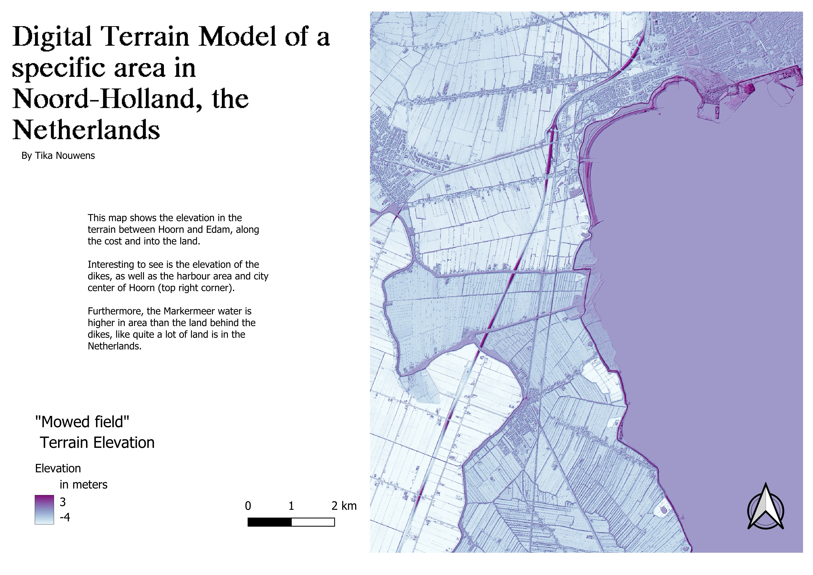
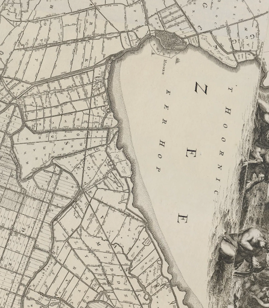

Digital Elevation Models
ABOUT DIGITAL ELEVATION MODELS
hghkaslhfoshf
DTM OF THE COASTLINE
My region of interest is located along the coast of the Markerneer in Noord-Holland. I selected this, because I grew up in Hoorn along this coast, and there have been cities there for a really long time. I chose the colour scheme from purple to blue, because this is colorblind friendly. Furthermore, the higher elevated areas jump out at the viewer. I discussed the choice of color scheme with the teacher's assistant, and she agreed that this colorscheme was not overwhelming, but still clear in message.
COMPARISON TO AN OLD MAP
I found an old map of the same area, which I used to compare my DEMs to the past. This way, we can see the changes in landschape over the past centuries.
I selected this map shown to the right. It is a fragment of a map of ‘t Hoogh-Heemraetschap vande uytwaterende sluysen in Kennenerlandt ende West-Vrieslandt. It was made in 1681 by Johannes Douw. It is 2.25 meters by 1.32 meters, so quite a big map. Interesting to see is the naming of the water by Hoorn as “Zuyderzee”, which shows that the map was made long before the afsluitdijk and the water became the freshwater lake it is now.
Below are three types of DEM portrayed with the old map overlaid on them. The DSM shows the first return of the lasers, therefore including buildings and vegetation. The darker colored cluster at the top right for example, is the city of Hoorn, clearly visible. In the DTM, only the terrain is visible, like a “maaiveld” stripped of buildings and trees. Comparing the area of Hoorn there, it is visible that the elevation is much lower, and therefore the colour less intense purple. I chose to keep the color scheme in the DSM and DTM the same, so that comparing them is relatively easy. It is clearly visible that in the DSM, the buildings are also portrayed, which shows up as clusters of higher elevation, for example the city.

There were some areas where comparing the old map and DTM was interesting. For example in the image to the left here, the coastline of the old map runs more to the right than in the DTM. This could be due to erosion of the coastline, bringing it further into the land. Otherwise, it could simply be due to inaccurate alignment of the DTM and the old map. There was one area that had a sudden higher elevation in the DTM, so without buildings present. This is shown in the excerpt to the right. After a quick google maps search and comparison, this turned out to be a hill in the Wilhelminapark, artificially created for recreation.